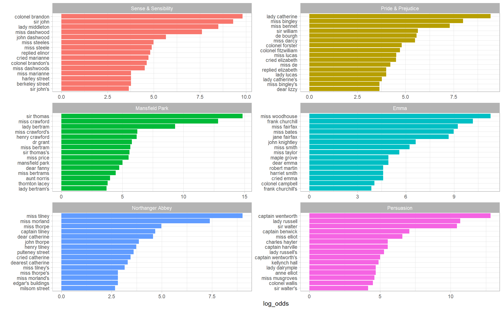
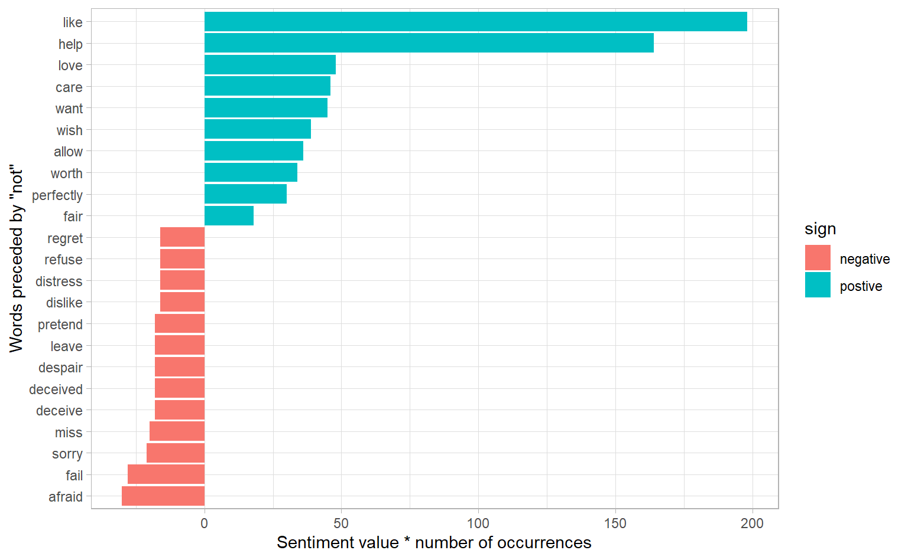
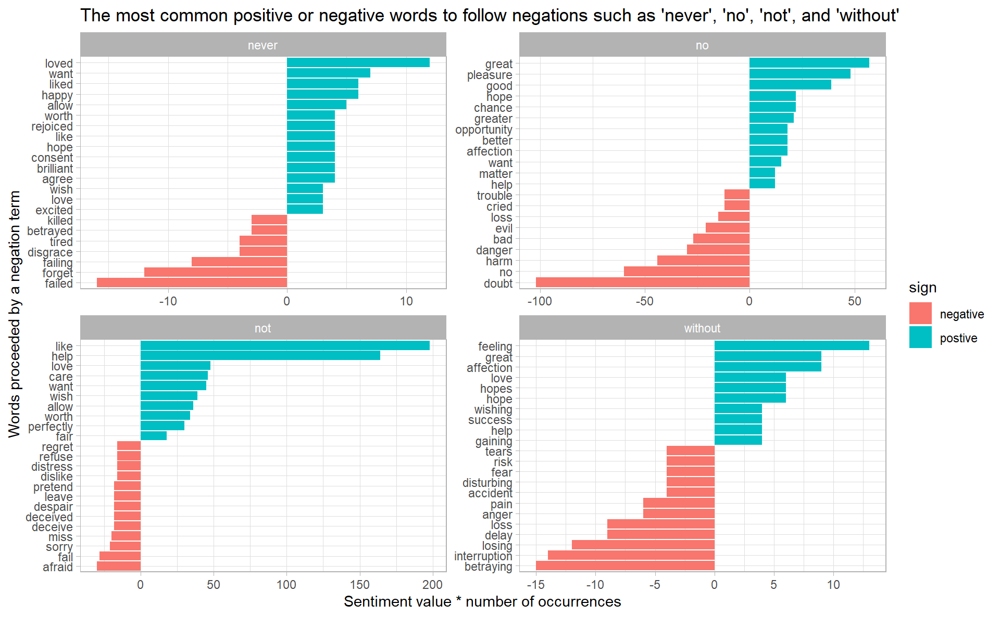
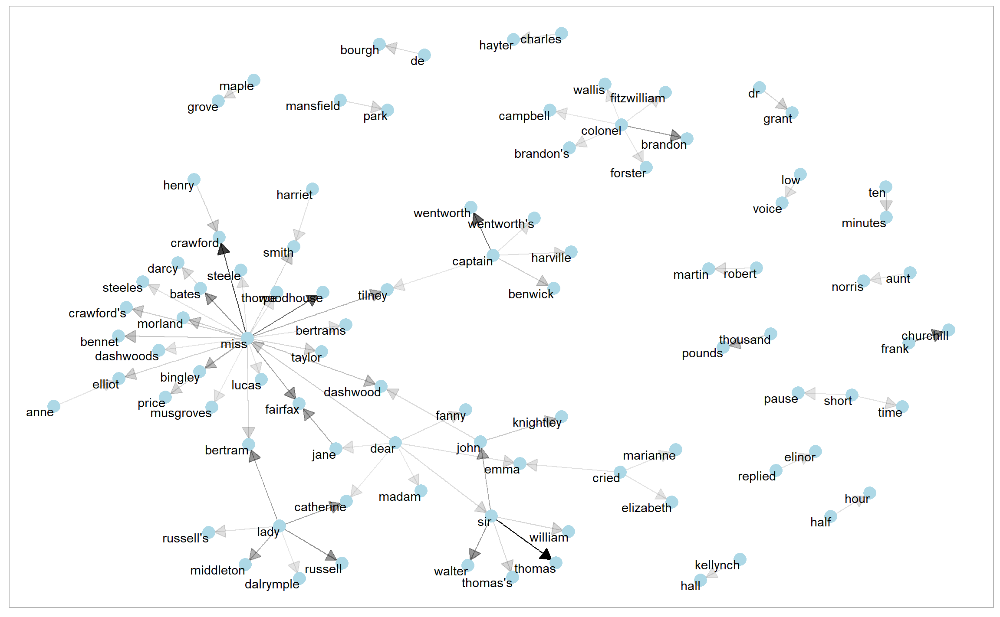
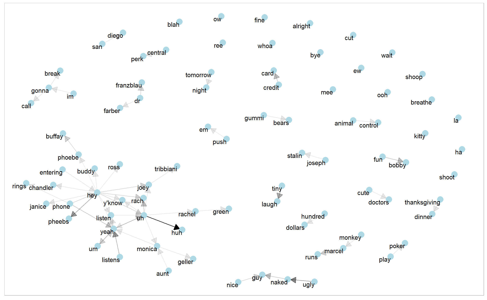

4.1 Tokenizing by n-gram
unnest_tokens() have been used to tokenize the text by word, or sometimes by sentence, which is useful for the kinds of sentiment and frequency analyses. But we can also use the function to tokenize into consecutive sequences of words of length n, called n-grams.
We do this by adding the token = "ngrams" option to unnest_tokens(), and setting n to the number of words we wish to capture in each n-gram. When we set nto 2, we are examining pairs of two consecutive words, often called “bigrams”:
library(janeaustenr)
austen_bigrams <- austen_books() %>%
unnest_tokens(bigram, text, token = "ngrams", n = 2)
austen_bigrams %>%
count(bigram, sort = TRUE)
#> # A tibble: 211,236 x 2
#> bigram n
#> <chr> <int>
#> 1 of the 3017
#> 2 to be 2787
#> 3 in the 2368
#> 4 it was 1781
#> 5 i am 1545
#> 6 she had 1472
#> # ... with 2.112e+05 more rows4.1.1 Filtering n-grams
As one might expect, a lot of the most common bigrams are pairs of common (uninteresting) words, such as of the and to be: what we call “stop-words” (see Chapter 1). This is a useful time to use tidyr::separate(), which splits a column into multiple based on a delimiter. This lets us separate it into two columns, filter out stop words separately, and then combine the results.
austen_separated <- austen_bigrams %>%
separate(bigram, into = c("word1", "word2"), sep = " ")
austen_united <- austen_separated %>%
filter(!word1 %in% stop_words$word,
!word2 %in% stop_words$word) %>%
unite(bigram, c(word1, word2), sep = " ")
austen_united %>% count(bigram, sort = TRUE)
#> # A tibble: 33,421 x 2
#> bigram n
#> <chr> <int>
#> 1 sir thomas 287
#> 2 miss crawford 215
#> 3 captain wentworth 170
#> 4 miss woodhouse 162
#> 5 frank churchill 132
#> 6 lady russell 118
#> # ... with 3.342e+04 more rowsausten_bigrams <- austen_bigrams %>%
separate(bigram, into = c("word1", "word2"), sep = " ") %>%
filter(!word1 %in% stop_words$word) %>%
filter(!word2 %in% stop_words$word) %>%
unite(bigram, c(word1, word2), sep = " ")
austen_bigrams
#> # A tibble: 44,784 x 2
#> book bigram
#> <fct> <chr>
#> 1 Sense & Sensibility jane austen
#> 2 Sense & Sensibility austen 1811
#> 3 Sense & Sensibility 1811 chapter
#> 4 Sense & Sensibility chapter 1
#> 5 Sense & Sensibility norland park
#> 6 Sense & Sensibility surrounding acquaintance
#> # ... with 4.478e+04 more rows4.1.2 Analyzing bigrams
The result of separating bigrams is helpful for exploratory analyses of the text. As a simple example, we might be interested in the most common “streets” mentioned in each book:
austen_bigrams %>%
separate(bigram, into = c("word1", "word2"), sep = " ") %>%
filter(word2 == "street") %>%
count(street = str_c(word1, word2, sep = " "), sort = TRUE)
#> # A tibble: 28 x 2
#> street n
#> <chr> <int>
#> 1 berkeley street 16
#> 2 harley street 16
#> 3 milsom street 16
#> 4 pulteney street 15
#> 5 wimpole street 10
#> 6 bond street 9
#> # ... with 22 more rowsA bigram can also be treated as a term in a document in the same way that we treated individual words. For example, we can look at the weighted log odds (Section 3.2) of bigrams across Austen novels.
library(tidylo)
austen_bigrams %>%
count(book, bigram, sort = TRUE) %>%
bind_log_odds(set = book, feature = bigram, n = n) %>%
group_by(book) %>%
top_n(15) %>%
ungroup() %>%
facet_bar(y = bigram, x = log_odds, by = book, nrow = 3)
4.1.3 Using bigrams to provide context in sentiment analysis
Context matters in sentiment analysis. For example, the words “happy” and “like” will be counted as positive, even in a sentence like
“I’m not happy and I don’t like it!”
Now that we have the data organized into bigrams, it’s easy to tell how often words are preceded by a word like “not”:
austen_separated %>%
filter(word1 == "not") %>%
filter(!word2 %in% stop_words$word) %>%
count(word1, word2, sort = TRUE)
#> # A tibble: 988 x 3
#> word1 word2 n
#> <chr> <chr> <int>
#> 1 not hear 39
#> 2 not speak 35
#> 3 not expect 34
#> 4 not bear 33
#> 5 not imagine 26
#> 6 not understand 26
#> # ... with 982 more rowsLet’s use the AFINN lexicon for sentiment analysis, which you may recall gives a numeric sentiment value for each word, with positive or negative numbers indicating the direction of the sentiment.
not_words <- austen_separated %>%
filter(word1 == "not") %>%
inner_join(get_sentiments("afinn"), by = c(word2 = "word")) %>%
count(word1, word2, value, sort = TRUE)
not_words
#> # A tibble: 245 x 4
#> word1 word2 value n
#> <chr> <chr> <dbl> <int>
#> 1 not like 2 99
#> 2 not help 2 82
#> 3 not want 1 45
#> 4 not wish 1 39
#> 5 not allow 1 36
#> 6 not care 2 23
#> # ... with 239 more rowsIt’s worth asking which words contributed the most in the “wrong” direction. To compute that, we can multiply their value by the number of times they appear (so that a word with a value of +3 occurring 10 times has as much impact as a word with a sentiment value of +1 occurring 30 times). We visualize the result with a bar plot
not_words %>%
mutate(contribution = n * value,
sign = if_else(value > 0, "postive", "negative")) %>%
top_n(20, abs(contribution)) %>%
mutate(word2 = fct_reorder(word2, contribution)) %>%
ggplot(aes(y = word2, x = contribution, fill = sign)) +
geom_col() +
labs(y = 'Words preceded by \"not\"',
x = "Sentiment value * number of occurrences")
The bigrams “not like” and “not help” were overwhelmingly the largest causes of misidentification, making the text seem much more positive than it is. But we can see phrases like “not afraid” and “not fail” sometimes suggest text is more negative than it is.
“Not” isn’t the only term that provides some context for the following word. We could pick four common words not, no, never and without that negate the subsequent term, and use the same joining and counting approach to examine all of them at once.
negation_words <- c("not", "no", "never", "without")
negated_words <- austen_separated %>%
filter(word1 %in% negation_words) %>%
inner_join(get_sentiments("afinn"), by = c(word2 = "word")) %>%
count(word1, word2, value, sort = TRUE)
negated_words %>%
mutate(contribution = n * value,
sign = if_else(value > 0, "postive", "negative")) %>%
group_by(word1) %>%
top_n(20, abs(contribution)) %>%
ungroup() %>%
ggplot(aes(y = reorder_within(word2, contribution, word1),
x = contribution,
fill = sign)) +
geom_col() +
scale_y_reordered() +
facet_wrap(~ word1, scales = "free") +
labs(y = 'Words proceeded by a negation term',
x = "Sentiment value * number of occurrences",
title = "The most common positive or negative words to follow negations such as 'never', 'no', 'not', and 'without'")
4.1.4 Visualizing a network of bigrams with ggraph
bigram_counts <- austen_separated %>%
filter(!word1 %in% stop_words$word,
!word2 %in% stop_words$word) %>%
count(word1, word2, sort = TRUE) bigram_graph <- bigram_counts %>%
filter(n > 20) %>%
as_tbl_graph()
bigram_graph
#> # A tbl_graph: 91 nodes and 77 edges
#> #
#> # A directed acyclic simple graph with 17 components
#> #
#> # Node Data: 91 x 1 (active)
#> name
#> <chr>
#> 1 sir
#> 2 miss
#> 3 captain
#> 4 frank
#> 5 lady
#> 6 colonel
#> # ... with 85 more rows
#> #
#> # Edge Data: 77 x 3
#> from to n
#> <int> <int> <int>
#> 1 1 28 287
#> 2 2 29 215
#> 3 3 30 170
#> # ... with 74 more rowsNote how tidygraph handles network data, the main tbl_graph object splits a network into two data frames: Node data and Edge data
ggraph(bigram_graph, layout = "fr") +
geom_edge_link() +
geom_node_point() +
geom_node_text(aes(label = name), vjust = 1, hjust = 1)
We see that salutations such as “miss”, “lady”, “sir”, “and”colonel" are common centers of nodes, which are often followed by names. We also see pairs or triplets along the outside that form common short phrases (“half hour”, “thousand pounds”, or “short time/pause”).
Note that this is a visualization of a Markov chain, a common model in text processing, where the choice of a word only depends on its previous word. In this case, a random generator following this model might spit out “dear”, then “sir”, then “william/walter/thomas/thomas’s”, by following each word to the most common words that follow it.
A polished graph:
arrow <- grid::arrow(type = "closed", length = unit(.15, "inches"))
ggraph(bigram_graph, layout = "fr") +
geom_edge_link(aes(alpha = n), show.legend = F,
arrow = arrow, end_cap = circle(0.07, "inches")) +
geom_node_point(color = "lightblue", size = 5) +
geom_node_text(aes(label = name), vjust = 1, hjust = 1)
4.1.5 Visualizing “friends”
Here I deviate from the original text, where Julia and David analyzed King James Version of the Bible. However, I have collected the transcripts of the famous TV series, friends (season 1). Let’s start a simple analysis first by loading the data
friends <- read_csv("data/friends_season_1.csv") %>%
select(-type)
glimpse(friends)
#> Observations: 5,974
#> Variables: 6
#> $ episode <dbl> 1, 1, 1, 1, 1, 1, 1, 1, 1, 1, 1, 1, 1, 1, 1, 1, 1, 1, 1, 1,...
#> $ person <chr> "monica", "joey", "chandler", "phoebe", "phoebe", "monica",...
#> $ line <chr> "there's nothing to tell! he's just some guyi work with!", ...
#> $ id <chr> "0101", "0101", "0101", "0101", "0101", "0101", "0101", "01...
#> $ title <chr> "The One Where Monica Gets a New Roomate (The Pilot-The Unc...
#> $ season <chr> "01", "01", "01", "01", "01", "01", "01", "01", "01", "01",...Retrieve a clean data frame with word counts (bigrams did not work very well)
friends_bigram <- friends %>%
unnest_tokens(word, line, token = "ngrams", n = 2) %>%
separate(word, into = c("word1", "word2"), sep = " ") %>%
filter(!word1 %in% stop_words$word,
!word2 %in% stop_words$word) %>%
filter(! (is.na(word1) | is.na(word2)))
friends_count <- friends_bigram %>%
count(word1, word2, sort = TRUE)
friends_count
#> # A tibble: 5,466 x 3
#> word1 word2 n
#> <chr> <chr> <int>
#> 1 hey hey 36
#> 2 ow ow 29
#> 3 la la 27
#> 4 yeah yeah 27
#> 5 wait wait 17
#> 6 uh huh 16
#> # ... with 5,460 more rowsDraw a network
friends_count %>%
filter(n > 3) %>%
as_tbl_graph() %>%
ggraph(layout = "fr") +
geom_edge_link(aes(alpha = n), show.legend = FALSE,
arrow = arrow, end_cap = circle(0.07, "inches")) +
geom_node_point(color = "lightblue", size = 5) +
geom_node_text(aes(label = name), size = 4, vjust = 1, hjust = 1)